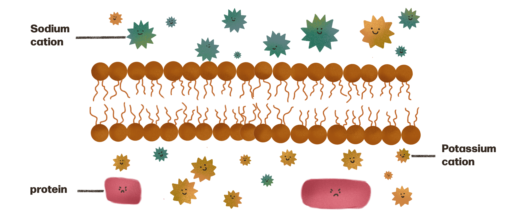
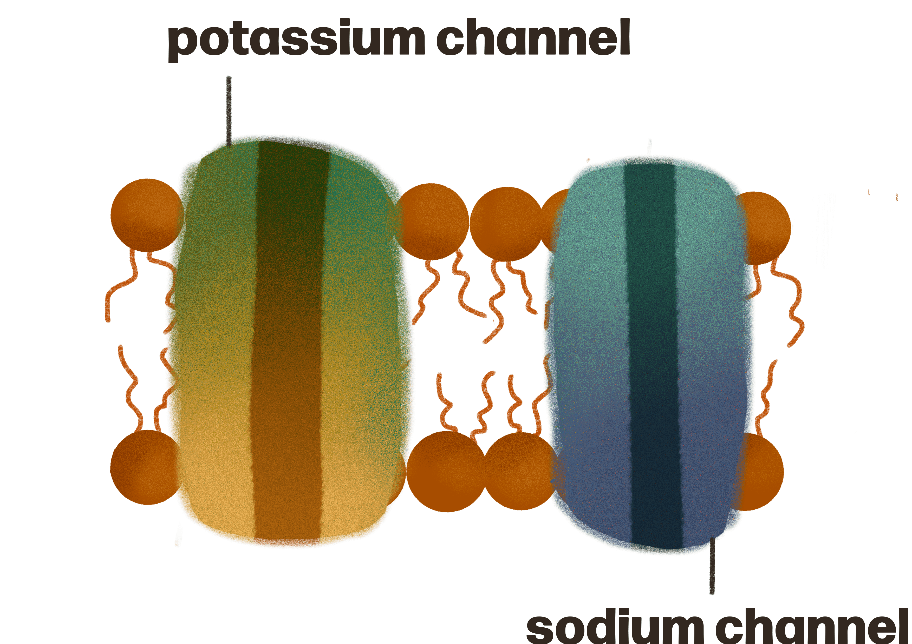

Okay, now we’re gonna go more in depth about the role the cell membrane plays in maintaining a negative charge within the neuron.
Balance
Something that you need to know is that nature HATES it when there’s not balance. The body will always try and reach an equilibrium.
Between the cell membrane there is a difference in energy and concentration of chemicals. As a result we get an electrochemical gradient!
Electrical gradient
Difference in charge across a membrane
Chemical gradient
Difference in particle concentration across a membrane
Ions in the membrane
There are more sodium cations outside the cell than inside.
There are more postassium cations inside the cell than outside
There is large negatively charged proteins inside the cell
The other anions found both inside and outside the cell don’t make a significant difference.

Channel proteins
Embedded in the membranes are transmembrane proteins called channel proteins. Transmembrane means they span the entirety of the cell membrane.
Protein channels are specific (picky) and only allow certain substances to pass through them.

Potassium channels only allow potassium to pass through and sodium channels only allow sodium to pass through
These substances move along these channels by a process called difussion.
Diffusion is the the movement of subtances from an area where they are at a higher concentration to areas where they are at a lower concentration
Postassium channels
There tends to be more potassium inside the cell than outside.
The potassium channels in a membrane are leaky.
Since the potassium can leave out the channel, it diffuses out of the cell
Now positive potassium ions have left the cell. Positive and negative charges attract so negative anions want to chase after them.
However the prodominent anion found in the cell are the negatively charged proteins. They aren’t able to pass through the membrane because they're too chunky, so they are trapped and left behind.
This results in a slight negative charge just inside the membrane.
Sodium channels
There is more sodium outside the cell. Sodium moves from an area of higher concentration to an area of lower concentration and travels inside the cell.
Sodium channels are less leaky than potassium ones. This means less sodium diffuses in, compared to the amount of potassium that diffuses out.
More positive ions are leaving the cell than entering. This contributes to a greater negative charge inside the cell.
Sodium-potassium pump
Above we just explored the main factors that contribute to a resting membrane potential of -70mV in neurons.
However the concentration of potassium and sodium between the membrane (concentration gradient) needs to be restored and maintained.
This is done by the sodium-potassium pump (also known as a transmembrane pump or a carrier protein).
It is powered by energy from the cell.
This pump swip-swaps 3 sodium from the inside of the cell to the outside and two potassium from the outside to the inside.
As a result the concentration gradient is maintained. The gradient drives the diffusion that causes a potential difference across the membrane.